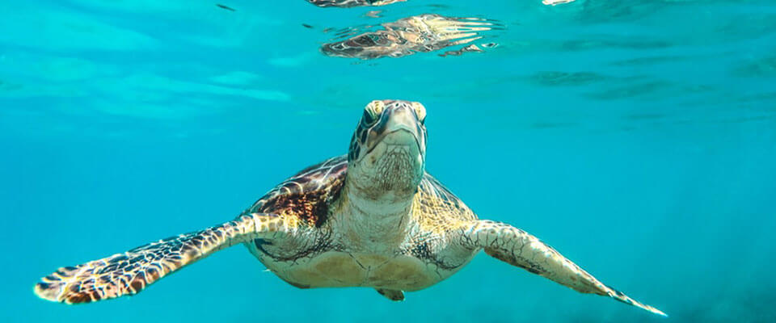
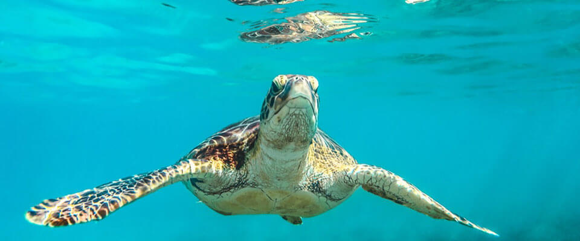

The hatchery began operating from 1988 and is run by Dudley Perera and his family. Who genuinely wants to conserve the turtle population. Their main objective of the hatchery as he mentions is, “We aim to make the public more aware of how endangered these beautiful creatures are and just how important it is to help protect them before it is too late.”
The projects they do depend on receiving funds and grants. They ensure that the beach is kept clean and well preserved so that the nesting sites will be protected. As, this is necessary to make sure that the nesting sea turtles will not be adversely affected and so that they will have a quality habitat which will result in reducing the number of false crawls and increase the successful turtle hatching rate.
They take in volunteers, who assist them in the operation of their project. This can be a transformative experience for the volunteers, as they get to know about turtles and the important role they play in the ecosystem (coastal and marine) along with the local community.